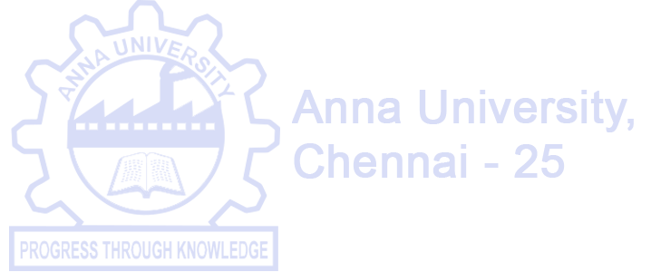
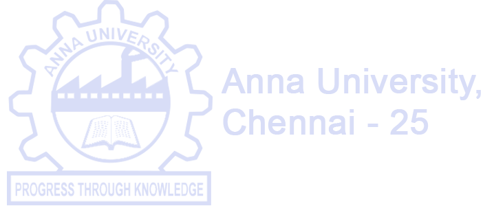
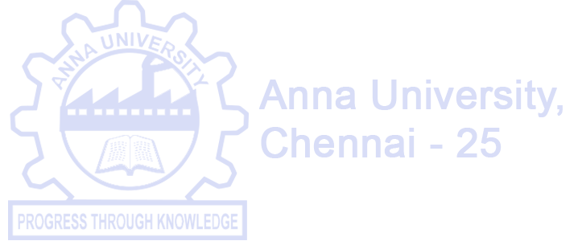

9 am, 10th October
Vivekananda Auditorium,Anna University, Chennai.

9 am, 10th October
Vivekananda Auditorium,Anna University, Chennai.
Prodigy is a state level technical event conducted for the school students which is being organized for the 12th time. The objective of the Prodigy is to promote computer awareness among the school students. The events comprise of Quiz, Puzzles, Programming, Presentations and other competitions. It aims at enhancing awareness among school students on the latest trends and technologies encouraging them to go beyond their textbooks and explore their latent potential in a state-wide extravaganza. Last year, the total number of participants reached nearly 1000, which glaringly shows the popularity of the event.